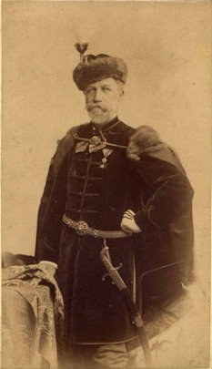

|  | | Jókai Mór díszmagyarban |
Petőfi nejével 1847. november 4-én érkezett Pestre, ahol a Dohány utca 373. sz. alatti Schiller-ház első emeletére költözött. A lakás előszobából és három utcai szobából állott, ebből az egyiket – aminek a konyhán át külön bejárata volt – Jókainak adták ki (itt laktak együtt 1848. június 12-ig, amikor a két barát összezördült, és a költő elköltözött tőlük). A közös ebédet az Aranysasból hozatták, bort egyikőjük sem ivott; az esték beszélgetéssel teltek el, tea mellett. 1848. március 14-én az ellenzéki kör közgyűlést tartott, melyen az ifjúság, köztük Jókai is, elhatározta, hogy a reformokat 12 pont alakjában a királyhoz felterjesztik.
Este a Pilvax-kávéházban értesültek a március 13-i bécsi forradalomról. Ekkor már elhatározta az ifjúság, hogy a 12 pont érdekében nem peticionálni, hanem megadásukat követelni fogja. Másnap, március 15-én Petőfi az ifjak kávéházába (Pilvax) ment, onnan Vasvári Pállal és Bulyovszky Gyulával pedig Jókaihoz. Itt a négy ifjú megegyezett a sajtó felszabadításában. Jókai és Bulyovszky proklamációt szerkesztettek a 12 ponthoz. Amikor ez elkészült, elindultak a Pilvaxba, ahova 8 óra körül érkeztek meg. Itt Jókai felolvasta a proklamációt és a 12 pontot. Innen az Újvilág (ma Semmelweis) utcai orvosi egyetemhez mentek, ahol beszóltak a tantermekbe, mire a hallgatók az udvarra tódultak. Jókai székre állva még egyszer felolvasta a proklamációt és Petőfi elszavalta a Nemzeti dalt. Az ifjak vállalkozása magával ragadta a tömeget, mely zajosan követte őket a mérnöki egyetem felé. Jókai ismét felolvasta a proklamációt és Petőfivel újból elszavaltatták a Nemzeti dalt. Ezután a Landerer és Heckenast-féle nyomdához indultak, a Hatvani (ma Kossuth Lajos) utcai Horváth-házba. A proklamációt és a Nemzeti dalt kinyomatták. Ezalatt Jókai jelentette a történteket a népnek. Fél 12 tájt a szabad sajtó első termékeit, a 12 pontot és a Nemzeti dalt, Irinyi József mutatta be a népnek és ezresével osztották szét. Délután a Nemzeti Múzeum terén népgyűlés volt és innen a városház tanácskozó termébe tódult a nép, ahol többek közt Jókai is beszélt a nép nevében és erre Szepessy Ferenc polgármester társaival együtt kijelentette csatlakozásukat és aláírta a 12 pontot. Rögtön választottak egy rendre ügyelő választmányt, melynek másnap Jókai is tagja lett. Budán Táncsics Mihályt kiszabadították börtönéből és a Nemzeti Színházhoz vitték. Itt közkívánatra a Bánk bánt adták elő, a sokaság beözönlésére felbomlott az előadás, a zenekar a Rákóczi-indulót harsogta, a közönség a Marseillaise-t követelte, majd Egressy a Nemzeti dalt szavalta el; annak eskütartalmú szavait a nép utána dörögte. Vasvári, Irinyi, Petőfi hiába csillapította a tömeget a nézőtérről, az még zajosabban követelt. Ekkor Jókainak hirtelen ötlettől vezérelve felrohant a színpadra, hogy onnan szóljon a néphez. Ott találta Laborfalvi Rózát, a nagy drámai művésznőt Gertrúd királyné szerepében, aki saját nemzeti színű kokárdáját tűzte mellére. Így felékesítve, egyébként „térdig sárosan (egész nap esett az eső), karbonári köpönyegben, behorpadt cilindere mellett óriási veres tollal, oldalán jurátus karddal” lépett a közönség elé. Meghallgatták és a nép lecsendesedett: lelkesülten, de szépen, rendesen oszlott szét. Jókai a további eseményekben is folyamatosan részt vett; nemcsak gyűléseken, demonstrációkban, a nemzetőrségben, hanem lapjában is teljes lélekkel szolgálta a szent ügyet.
A móri csata után, 1849. január 1-jén ők is Debrecenbe menekültek. Itt is hírlapírással tartotta fenn magát; február 22-én megindította az Esti Lapokat, melyet az alkotmányos irány független képviseletére alapított a radikálisok főorgánuma, a Március Tizenötödike ellen. Április 14-én az országgyűlés egyhangúlag mondotta ki a trónfosztást, Jókai is radikálissá lett és már előbb (április 3-án) a köztársaság mellett nyilatkozott. Amint honvédjeink Buda várát bevették, a kormány és az országgyűlés Pestre költözött. Jókai is ott adta ki az Esti Lapokat és a Pesti Hírlap szerkesztését is átvette. Mind a két lapnak egyedüli törekvése a haza védelmére való buzdítás volt. A kormány egy hónap múlva azonban az osztrák és orosz hadak előrenyomulása miatt Szegedre, onnan pedig Aradra tette székhelyét. Jókai is követte azt mindkét helyre. A világosi katasztrófa után menekülését Rákóczy János, Kossuth rokona és titkára intézte, aki kocsit, lovat vett, felöltözött kocsisnak, felvette Jókait utasnak és vakmerően keresztülhajtott a szembe jövő orosz táboron. Gyulán találkozott ismét nejével és vele együtt menekült tovább a Bükk-vidék borsodi rengetegeibe. Tardonán, az erdős hegység elrejtett völgyi falujában, Csányi Béni földbirtokosnál húzta meg magát és itt élt, leginkább festéssel foglalkozva, ötödfél hónapig. Ezt az időszakot meséli el az Egy bujdosó naplója című műve. Jókainénak sikerült egy Klapka-féle komáromi menlevelet szereznie, Jókai Mór, mint Klapka György által kinevezett honvédhadnagy számára kiállítva és amelyet Szathmáry Zsigmond (Szigligeti testvére) honvédkapitány kézbesített. Élete így meg volt mentve, de az óvatosság nem volt felesleges. Pestre csak később, Kovács János neve alatt Miskolcon szerzett útlevéllel tért vissza, s még itt is több hónapig részint neje lakásán, részint a budai hegyekben Adliczer vendéglőjében rejtőzött.
|